Узнайте, как использовать эту функцию Beta, но будьте осторожны при ее применении.
Режим редактора моделирования, также известный как режим моделирования, предоставляет набор инструментов для создания, скульптуры и редактирования 3D-геометрии непосредственно в Unreal Engine (UE). Эти инструменты предлагают рабочие процессы для редактирования топологии, создания UV, назначения нескольких материалов, редактирования столкновений и запечки текстур.
В этом обзоре описано:
Перед использованием режима моделирования рекомендуем разобраться в следующих темах:
Чтобы получить доступ к режиму моделирования, нажмите выпадающее меню «Выбрать режим», а затем нажмите «Моделирование». Или нажмите SHIFT+5, чтобы сразу переключиться в этот режим. Чтобы узнать больше о различных режимах, смотрите раздел «Режим редактора уровней».
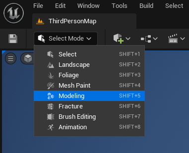
Если в выпадающем меню режима не отображается Modeling, убедитесь, что редактор включён в ваших плагинах. Редактировать > Плагины > режиме редактора инструментов моделирования Чтобы узнать больше, см. раздел «Работа с плагинами».
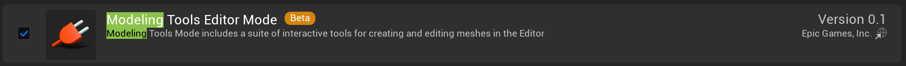
При нажатии на режим появляется пользовательский интерфейс (UI) Modeling Mode с несколькими панелями, чтобы упростить ваш рабочий процесс.
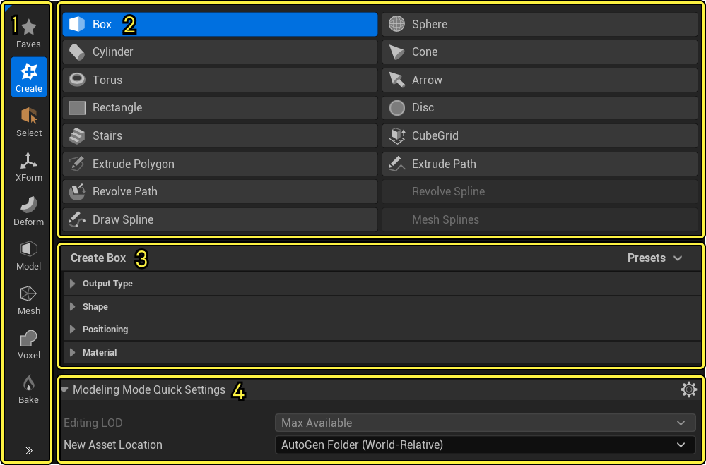
Дополнительная панель с подсказками, такими как команды горячей клавиши, доступна в нижней панели редактора уровней при использовании режима моделирования.
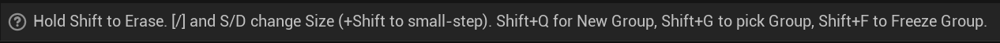
Хотя многие инструменты в режиме моделирования похожи на свои аналоги в других программах для моделирования, существует несколько существенных отличий в структуре редактирования сеток, которые стоит знать до начала работы.
Инструменты моделирования применимы при работе с различными типами актёров Unreal Engine (UE), такими как статические меши, динамические меши или объёмы. Они вместе называются «мешами» или «мешами», за исключением случаев, когда инструмент подходит только для конкретного типа актора.
Unreal Engine отображает все модели как триангуляционные сетки. Другими словами, при импорте или создании сетки её поверхность автоматически разбивается на треугольники (триугольники), независимо от того, были ли они уже определены в другой среде. Это преобразование в треугольники даёт несколько гарантий:
В режиме моделирования вы можете редактировать треугольники вашей сетки с помощью инструмента редактирования треугольника. Этот инструмент — один из самых низкоуровневых инструментов редактирования топологии, полностью основанный на прямом выборе и редактировании трилогий и вершин. Хотя Unreal Engine не распознаёт нативно квады или n-угольники, он поддерживает PolyGroups, которые могут имитировать эти особенности. PolyGroups — это произвольные наборы треугольников, которые могут определять различные инструменты в режиме моделирования. Затем вы можете управлять этими группировками для традиционного моделирования коробок с помощью инструмента PolyGroup Edit, создавать UV с помощью UV-инструментов и многое другое. При создании сетки с использованием одной из примитивных фигур в категории Create вы можете настроить PolyGroups новой сетки с помощью режима PolyGroup.
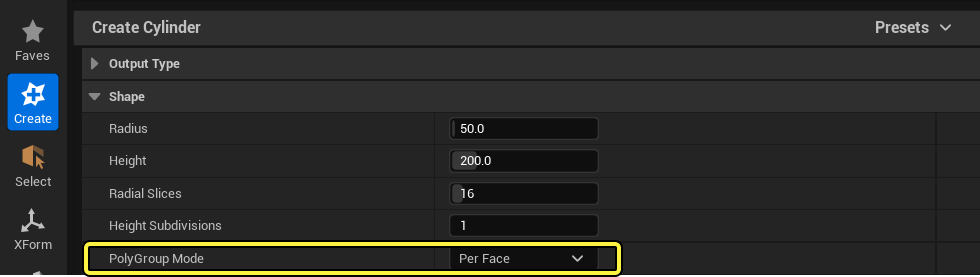
Кроме того, вы можете назначать PolyGroups с помощью следующих инструментов:
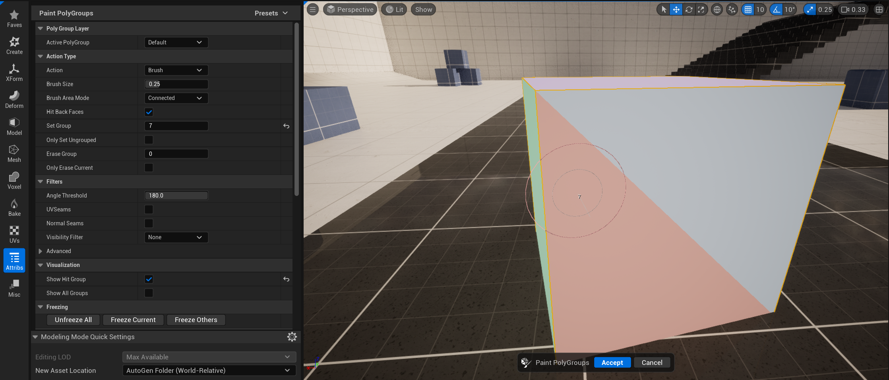
Чтобы узнать больше о создании и использовании PolyGroups, см. раздел Understanding PolyGroups.
Большинство инструментов в режиме моделирования не применяют изменения к сеткам сразу. Вместо этого инструмент показывает предварительный просмотр сетки с учётом ваших изменений, а панель подтверждения инструмента отображает кнопки «Отмена» и «Принять».
Если вы выходите из режима моделирования или нажимаете Cancel, ваши изменения отбрасываются, и сетка возвращается к прежнему состоянию до начала редактирования. Когда вы нажимаете Accept, вы выходите из инструмента, и все изменения, внесённые в меш во время использования инструмента, применяются к базовой сетке. Изменения также применяются, когда вы переключаетесь с активной сессии инструмента на другую. Во время использования инструмента вы можете отменить или заново делать отдельные изменения. Однако, приняв изменения, система истории отмены в UE отслеживает состояние сети только до и после активации инструмента. Например, вы можете отменить каждый мазок кисти внутри инструмента Vertex Sculpt. После нажатия «Принять» и выходя из инструмента слепления, можно отменить только совокупный результат всех мазков кисти. Undo возвращает вашу сетку в состояние до запуска инструмента.
Тип актёра, который вы выбираете для представления вашей сетки, определяет, как режим моделирования обрабатывает процесс создания и редактирования. При создании новой сетки в категории Create вы используете Output Type для выбора желаемого актёра. Вы можете выбрать один из следующих актёров в качестве целевого меша:
У этих типов есть различные сценарии использования и преимущества. Вы можете изменить тип актора текущей сетки с помощью таких инструментов, как Convert и Transfer. Используйте настройки проекта для настройки создания и выбора мешей, а также сохранения ассетов. Чтобы продолжать изучать, как обрабатываются типы вывода и как настраивать настройки вашего рабочего процесса, ознакомьтесь с документацией Working with Meshes.
Чтобы создать новую сетку, следуйте следующим шагам:
Редактор создаёт фигуру, используя параметры, настроенные в панели Свойства инструмента.
Вы также можете создавать пользовательские меши с помощью инструментов из категории Создать. Например, вы можете использовать инструмент Extrude Polygon, чтобы нарисовать контур меша, а затем экструдировать её, чтобы создать 3D-фигуру.
Несколько инструментов, таких как Extrude Polygon и Extrude Path, используют сетку для рисования фигур. Чтобы контролировать положение сетки, нажмите Ctrl + Click по нужному месту.
Большинство других инструментов в режиме моделирования построены на редактировании существующей сетки в вашем игровом мире. Например, если выбрать Triangle Edit или PolyGroup Edit и затем кликнуть на меш, можно выполнить топологические операции моделирования. Отдельные операции в инструментах Triangle Edit и PolyGroup Edit, такие как Extrude, Push Pull или Cut Faces, отображаются в панели Свойства инструмента. После внесения правок нажмите кнопку Accept, чтобы завершить изменения, или Cancel, чтобы их удалить.
Вы можете выбрать любую сетку в вашем мире и редактировать её с помощью этих инструментов, включая те, которые не были созданы в режиме моделирования. Например, вы можете использовать инструмент Lattice на высокоразрешенной сетке, чтобы быстро изменить её форму.
Если вы планируете редактировать модель высокого разрешения, мы настоятельно рекомендуем дублировать актив с помощью инструмента Duplicate, чтобы сохранить исходную сетку.
В режиме моделирования есть специальный инструмент для уникальных и быстрых преобразований мешов. По умолчанию масштабирование, вращение и перевод (move) объединены в один инструмент.
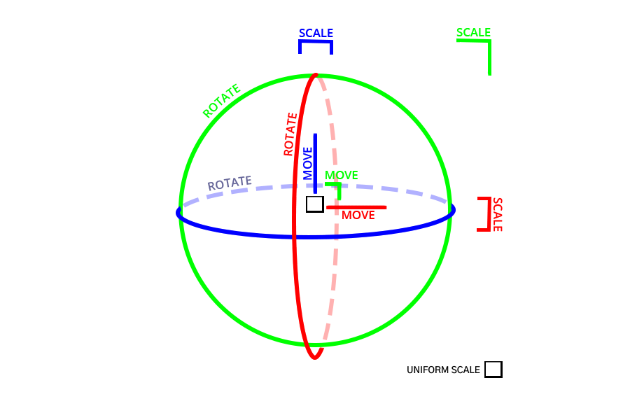
Чтобы использовать индивидуальный инструмент для моделирования, соответствующий стандартному переводу, вращению и масштабированию редактора уровней, следуйте следующим шагам:
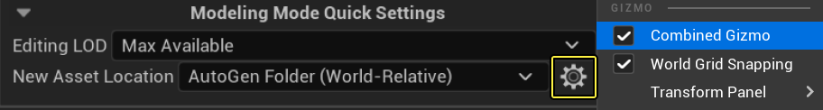
Помимо структуры моделирующего устройства, вы можете видеть:
Панель трансформации отображается непосредственно в Viewport и доступна для нескольких инструментов моделирования и UV.
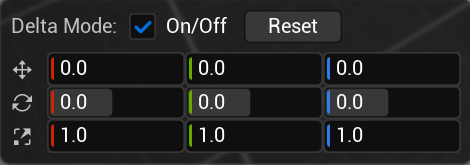
Вы можете использовать горячие клавиши Gizmo, указанные в таблице, для определённых инструментов. Конкретные инструменты моделирования имеют дополнительные атрибуты gizmo, такие как переставляемая сетка для Extrude Polygon, Extrude Path и инструмент Patten. Используйте Горячую линию для указания, когда можно использовать эти горячие клавиши.
Режим моделирования предоставляет возможность прямого выбора элементов сетки для более последовательного и оптимизированного рабочего процесса. Выбор элементов меша позволяет художникам выбрать меш, выбрать элемент и затем вызвать операцию без использования промежуточных инструментов, таких как PolyGroup Edit или Triangle Edit.
Чтобы включить инструмент, следуйте следующим шагам:
Кроме того, когда настройка включена, становится доступна категория Select с инструментами для редактирования выбора мешей.
Используя различные инструменты в режиме моделирования, вы можете создавать рабочие процессы с повторяющимися настройками для конкретных инструментов. Вместо многократного ввода этих настроек вы можете использовать опцию пресетов при выборе инструмента. С помощью пользовательских пресетов вы можете сохранять текущие настройки инструмента, перезагружать их в будущем и управлять, какие коллекции пресетов активны и включены для проекта или пользователя.
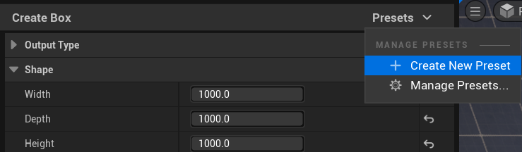
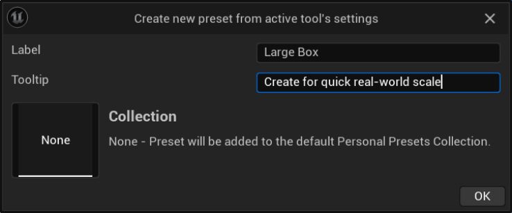
Чтобы узнать больше об этих категориях и их конкретных инструментах, смотрите раздел «Инструменты моделирования».